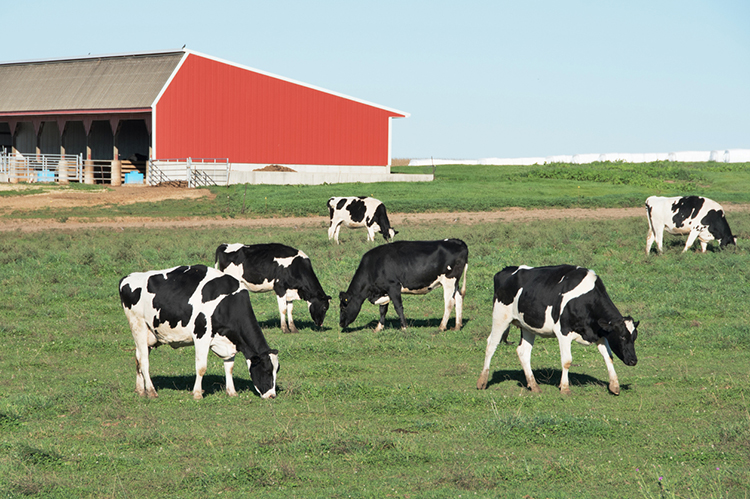

Details about Cows
Cows are currently the most common domesticated ungulate (hoofed mammal), and they are found wherever humans live. The size and weight of a cow is highly dependent on the breed. Mature males weigh 1,000–4,000 pounds and females weigh 800–2,400 pounds.
Cattle are extremely curious and inquisitive animals which will investigate everything. The also have almost 360° panoramic vision. This helps them to see predators coming from any direction.
